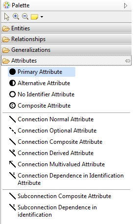
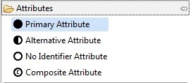
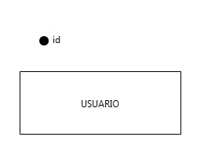
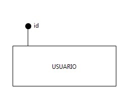
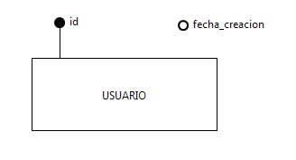
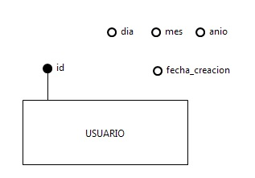
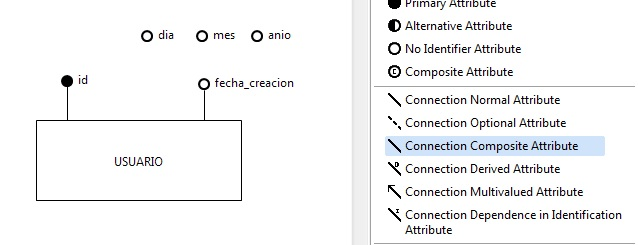
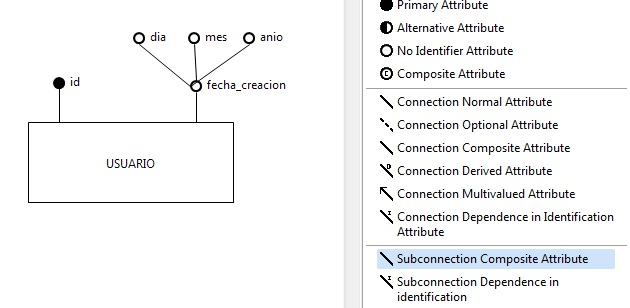

Disponemos basicamente de 2 tipos de atributos, que son:
3.1. Creación de Atributos Simples
Para crear un atributo lo primero que tenemos que tener creado es la entidad a la cual le vamos a añadir dichos atributos. Luego, nos iremos al menu Palette del editor y desplegaremos el desplegable que lleva por nombre Attributes

Como podemos observar en la imagen, disponemos de 4 tipos de atributos:

Para crear uno de los atributos simplemente tenemos que seleccionarlo en el menu, y colocarlo en las proximidades de la entidad a la cual queremos agregarselo. Por ejemplo, agregaremos la clave primaria, a una entidad Usuario, como se muestra en la siguiente imagen.

A continuación tendremos que unir la entidad al atributo que hemos creado. Para ello, seleccionaremos del menu Attributes la conexión correspondiente a este tipo de atributo, que es Connection Normal Attribute. Para unirlos, arrastramos el cursor desde la entidad al atributo que hemos creado.

3.2. Creación de Atributos Compuestos
Para crear un atributo compuesto lo primero que tenemos que seleccionar del menu del editor el elemento No Identifier Attribute y lo dibujamos cerca de la entidad a la cual queremos asociarselo. En este caso, imaginaremos que queremos crear un atributo que guarde la fecha de creación de un usuario del sistema.

A continuación crearemos los subcomponentes del atributo compuesto. En nuestro caso, imaginemos que queremos saber de la fecha de creación el día, mes y año. Para ello seleccionaremos del menu Attributes del editor el elemento Composite Attribute y los dibujaremos cerca del atributo fecha_creacion

El siguiente paso, es vincular la entidad con el atributo compuesto, para ello seleccionaremos del menu Attributes del editor el elemento Connection Composite Attribute y trazaremos la linea desde la entidad al atributo fecha_creacion

Por último nos queda vincular el atributo compuesto fecha_creacion a los subcomponentes dia, mes y anio. Para ello seleccionaremos del menu Attributes del editor el elemento Subconnection Composite Attribute y trazaremos una linea por cada subcomponente desde desde el atributo fecha_creacion
